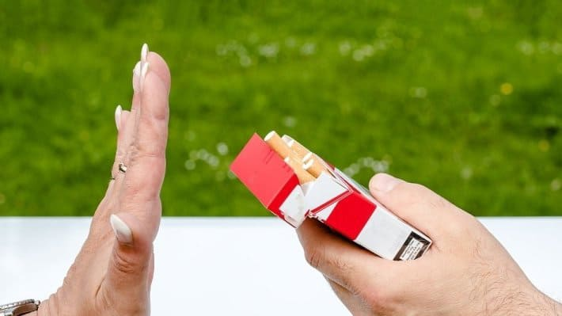
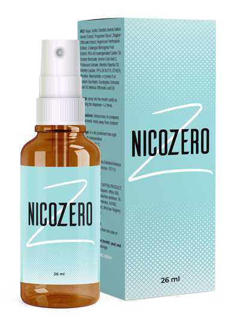

Да пушиш през целия си съзнателен живот и да спреш за един ден е лесно!

Ангел Михов,
Откакто се помня, не съм изпускала цигарата от ръцете си. Тридесет и пет нещастни години посветих на поглъщането на никотина и на 44-я ми рожден ден просто ги отказах. Не с вълшебна пръчка, разбира се, но също така бързо и без усилие. Така че методът е подходящ дори за най-мързеливите

Започнах да пуша от глупост
Първата си цигара изпуших на 14 години. Като всички пушачи, не можех дори да си редставя в какво блато ще ме завлече.
Отначало това беше детска глезотия, после ме научиха как правилно да дърпам, а след това ми се наложи да почувствам цялата тежест на синдрома на отказване, когато заминах на почивка със семейството си в Тайланд.
Нито караниците на мама, поради намерените кутии от цигари, нито моралното гледане на сърцераздирателни видеоклипове с тежка смърт на пушачи, нито поучителните погледи на минувачите, хващащи зад ъгъла на училището тийнейджър с цигара в устата, не ме спасиха от този гаден навик.

След училище се появи повече свобода. В университета вече пушех, като работник в голям завод или миньор. Така стигнах до две кутии на ден и съвестта ми напълно ме задуши.
От мен силно смърдеше на тютюн 24 часа. Цигарената миризма се абсорбира в косата, попива в дрехите, така че никакъв Шанел не може да те спаси. Какво да Ви кажа, дори гъбичката от пудрата ми смърдеше!
Осъзнавах всичко това, но бях напълно безсилна срещу чудовището, което никога не му стигаше никотиновата доза. Хубаво настроение – пуша, лошо настроение – пуша още повече!
Цигарите ме спасяваха и съсипваха едновременно. Кожата ми изглеждаше зле, тийнейджърските пъпки станаха зрели, бръчките около очите ми се появиха по-рано, отколкото на майка ми, която е непушачка, с 5 години.
Зъбите ми станаха жълти, а ухажорите два пъти се отказаха да ме целуват заради лошия дъх от устата ми. Така се появиха комплексите ми, но дори и те не ме насочиха на правия път.
Бях само малко над 30, когато осъзнах мащаба на проблема. Постоянната миризма, страхът от свършването на кутията и неудържимата нервност, която се появяваше, когато не можех да запаля, толкова ме завладяха, че за първи път в живота си съзнателно реших да се откажа от пушенето.

Не знам кой може да използва силната си воля, за да преодолее зависимостта. За два месеца никотиново въздържание получих само абонамент при психолог. Който в крайна сметка беше изпратен на едно нецензурирано място.
Всеки ден от тези два месеца ми се струваха като тестов период в ада, който никак не свършваше. Ядох всичко, което можех ми попадаше, като се опитвах да сваля нервното напрежение. Цифрата на кантара растеше право пропорционално на моята омраза към себе си.
Всичко ме дразнеше, абсолютно всичко! Новата прическа на колежката, шумното дишане на счетоводителя, гаден човек в метрото. Всичко стана гадно и аз, на първо място.
Сривове и отвращаване от себе си
Нямаше никакъв празник на хоризонта, един ден просто си купих кутия с цигари, защото не можех повече да живея така.
Първата цигара беше най-отвратителната на вкус, но аз я изпуших с такава жадност и удоволствие, с която само едно едногодишно дете може да смуче опашката на котка.
Презирах се, мразех се и едновременно с това се самосъжалявах . Никотиновата зависимост ме пороби и ме прави заложник. Цигарите ми помогнаха да ям по-малко, да се чувствам по-добре в чужда компания. Но когато се оказвах сред непушачи, веднага се превръщах в парче позорно съмнение: “Ами, аз само така, от нямане на работа”.
Разбира се, още много пъти се опитвах да ги спра. Купувах всички аптечни, аюрведични и други шамански неща цели опаковки и не получих нищо друго освен празен портфейл, изгубени надежди и малка черна радост: “Още малко ще попуша и ще ги спра”.

Новият ни служител отучи всички да ходят да пушат по цигара
Почти бях изгубила мисълта за някогашното си яростно желание да спра пушенето, когато се появи колега, който тръбеше на всички за неговия личен метод как да станеш непушач в две минути.
Принципиално игнорирах разговорите си с него, защото толкова, колкото мен, за никотиновата зависимост не знаеше дори самият Алън Кар. Какво ново можеше да ми каже този не знаеше, който ме дразнеше с енергичността си?
Както по-късно случайно се оказа, той имаше какво да каже на една старомодна дама. За съществуването на спрей, който стимулира работата на невротрансмитерите и напълно блокира желанието за пушене, например.
Ако се задълбочим в детайлите, Стефан все пак постигна това, да го изслушам и ми разказа за . Това лекарство – съвсем не е това, което години наред щедро са ни пробутвали състрадателните ни фармацевти.
Това е разработка на белгийски учени, които са посветили повече от 10 години на спрей против никотина. В състава му няма никотин, за разлика от аптечните продукти. Но има Гота кола, женшен и цикория, които в комбинация действат по такъв начин, че просто от главата Ви изчезва желанието да пушите.
С прости думи това е така, научната информация можете да прочетете на сайта на производителя. А на практика, всичко става като в приказките.
Как в крайна сметка се отказах от пушенето
Започнах да взимам , без да се надявам на резултат. Дори повече – бях сигурна, че ако спра да пуша, то скоро ще започна отново. Сама не забелязах как от два пакета на ден стигнах до това, че една кутия ми стигаше за цяла седмица.
Ясно си спомням момента, в който ми дойде мисълта: защо пуша сега, на мен сега съвсем не ми се пуши? С всяко дръпване разбирах, че: тютюневият дим ми е отвратителен, вкусът е гаден и не искам да пуша!
Остана ми недопушена кутия – носех я с мен още два месеца “за всеки случай”. Но така и не се случи. Първоначално посягах към цигарите по навик. Изваждах я, въртях я в ръцете си и я прибирах обратно в чантата.
Започнах да чувствам приятните миризми наоколо, белите ми дробове се напълниха с чист въздух, а в главата ми сякаш беше направено пролетно почистване. Имаше много приятни неща, с които можех да се занимавам, вместо да поглъщам никотин.
Всичко това знаех и преди, но винаги съм се страхувала дори да си помисля, че няма вече да пуша и, че ще трябва с нещо да заменя това силно желание. Кой би си помислил, че някакъв си ще може да промени толкова мирогледа ми!

Не пуша повече от две години от момента, в който осъзнах пристрастяването си. За това време станах по-свежа, по-хубава, започнах да се чувствам по-добре, имах много енергия и – най-важното, започнах да се наспивам!
Да бъдеш непушач е истинско щастие, което може да бъде оценено само след истинско спиране на цигарите завинаги. Ако и Вие искате и, може би се страхувате, както и аз преди това, задължително опитайте .Обещавам, че той ще промени живота Ви към по-добро.
P. S. До на сайта на производителя можете да си поръчате с 50% намаление.


Мария Борисова
Наистина ли има някой, който не знаел за ?
Елена Недялкова
Мисля, че за мнозина ще бъде новина, че в Америка се изписва от лекарите – като лекарство. Надявам се, скоро и ние да се отнесем сериозно към това.
Светлана Рачева
И аз с спрях пушенето. На фона на никотиновите дъвки, лепенките и спрейовете, това е просто като небето и земята! Като ги спрях преди 7 месеца, до сега не пуша и дори не ме тегли.
Димитър Андреев
Наистина ли той толкова помага? Не искам пак да хвърлям пари на вятъра
Иван Енчев
Слушайте, аз смятам, че това е най-добрата финансова инвестиция в живота ми. Веднъж да не си купиш една кутия цигари и след това цял живот ще спестиш от това, че не харчиш за тази гадост. Сега всеки ден заделям в закрита сметка сумата, която по рано похарчих за цигари. Вече имам около 40 хиляди))
Константин Росенов
Хубава икономия. Така и за кола можеш да събереш. А бързо ли помага?
Михаил Банков
Пуших от 7-годишна възраст. Мислех си, че ще мога да ги спра по всяко време, ако поискам. Май толкова силно не ми се искаше. И дори когато здравето ми беше изложено на риск (имаше подозрение за рак), така и не можах да ги спра. Добре че жена ми се зае с това, иначе щях да умра с цигара в уста. Купи ми този и ме накара да го използвам. Не очаквах чудо, но от интерес реших да опитам. И ето как излезе - просто започнах да забравям за цигарите. Така един път забравих да си купя кутия, повече и не си купих. От година и половина не пуша. Ако спра да се наливам с бира, ще стана златен човек.
Ирина Веселинова
Хора какво готино чувство е това, не мога да го опиша с думи!!! Колко живот съм пропиляла на тази проклета зависимост! Косата ми, дрехите, ръцете винаги смърдяха ... и на мен ми беше противно, а не можех да ги спра. Слава на великите медици, които измислиха !!
Емил Богданов
Кой е използва , за колко помага?
Константин Иванов
На всички по различен начин в зависимост от стажа и личното пристрастяване. С приятелите ми правихме опити. След една седмица от миризмата на цигари ми се повдигаше, а другите двама след 10 дни ги спряха. Само почти един месец пих . Вярно е, че той има 35-годишен стаж.
Стоян Станчев
Поръчах няколко пакета на проба, надявам се да ми помогне. Между другото, днес е последният ден от промоцията. От утре цените ще скочат.
Георги Огнянов
Ура, успях!!! Чакам пратката, обещаха ми, че ще дойде скоро. Най-накрая ще спра цигарите и ще започна да спестявам пари за Тайланд.)))